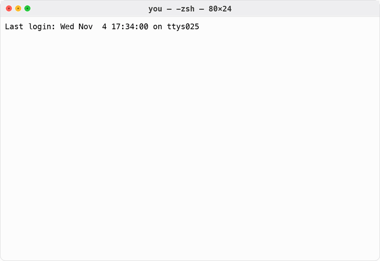
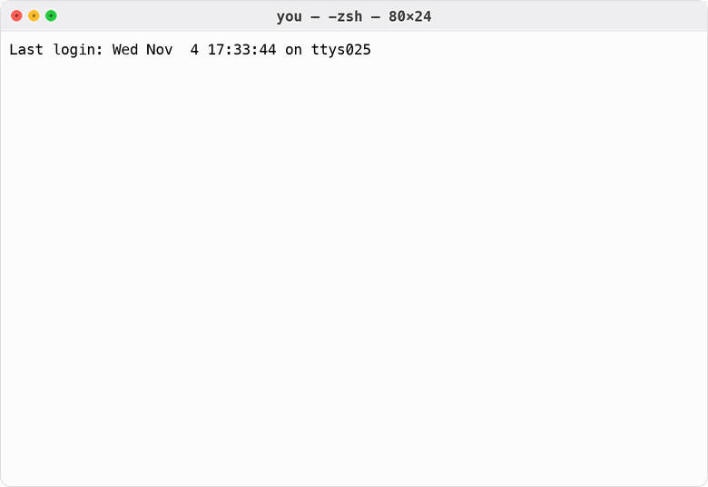

A package manager for macOS, built for the command-line tools macOS developers rely on.
面向 macOS 的包管理器，用于分发开发者日常依赖的命令行工具。
MacWave is a package manager for macOS, built to distribute the command-line tools that macOS software developers rely on. Its project, LinuxWave, covers Linux.
MacWave 是一个面向 macOS 的包管理器，用于分发 macOS 软件开发者日常依赖的命令行工具。Linux 由项目 LinuxWave 覆盖。
package@version, so several versions coexist and none of them shadow a system tool.wave link <package> creates a plain package shortcut that points at the highest installed version and re-points itself whenever versions are installed or removed.MacWaveOrg/infosource repository at request time..zip, .tar.gz, .tar.bz2, .tar.xz, .tar, .gz, .xz, .bz2, and .conda.-C.package@version 之下，多个版本可以共存，且都不会遮蔽系统工具。wave link <软件包> 会创建一个不带版本号的 软件包 快捷方式，指向已安装的最高版本；安装或卸载版本时，它会自动改指。MacWaveOrg/infosource 仓库读取。.zip、.tar.gz、.tar.bz2、.tar.xz、.tar、.gz、.xz、.bz2 与 .conda。-C 继续。macOS Monterey 12 and above
macOS Monterey 12 及以上
In the terminal, run:
在终端中运行：
$ /bin/bash -c "$(curl -fsSL https://github.com/MacWaveOrg/MacWave/releases/latest/download/install.sh)"
(If you are using bash instead of zsh, run source ~/.bashrc)
（如果你使用的是 bash 而非 zsh，请运行 source ~/.bashrc）
We recommend reading the handbook after installing. Read it here.
安装后建议阅读手册。点击阅读。

Requirements: macOS Monterey 12 or later, Xcode Command Line Tools.
You do not need to install Python — MacWave bundles its own interpreter.
环境要求：macOS Monterey 12 及以上、Xcode Command Line Tools。
你不需要自己安装 Python —— MacWave 自带解释器。
This repository holds source, not an installation. Running wave from inside a clone, or adding directories from the clone to PATH, fails by design.
本仓库存放的是源码，不是安装结果。在 clone 里运行 wave、或把 clone 中的目录加入 PATH，都会按设计失败。
For scripts and batch use, the installer takes flags so it never waits for input. Options go after --, which ends bash’s own options:
面向脚本与批量场景，安装器提供若干参数，全程不会停下来等待输入。参数放在 -- 之后 —— -- 会结束 bash 自身的选项：
# straight from the repository
$ /bin/bash -c "$(curl -fsSL https://github.com/MacWaveOrg/MacWave/releases/latest/download/install.sh)" \
-- --ci --dir-option=1
--ci (same as --CI) answers the directory menu and the agreement automatically. It needs passwordless sudo, or root, when the chosen directory requires privilege. --dir-option=N picks menu entry N (1-4 on Intel, 1-3 on Apple silicon); for the custom entry, append the path after =, as in --dir-option=4=/opt/my-macwave. Three more arrived in 4.4: --raw (no ASCII art, no colour, no spinner; '
'one #### line per 10% of a download), --print-usage '
'(prints usage, then installs anyway) and --skip-probe (skips the write probe and '
'goes by permission bits alone). --help prints usage and stops, and no longer touches '
'the network. Run install.sh --help for the list.
--ci（也可写 --CI）会自动应答目录菜单与许可协议；当选中的目录需要提权时，它要求免密 sudo 或以 root 运行。--dir-option=N 免菜单直接选定第 N 项（Intel 机器为 1-4，Apple 芯片为 1-3）；自定义项要在 = 之后附上路径，例如 --dir-option=4=/opt/my-macwave。4.4 又多了三个：--raw（不要艺术字、颜色与转圈动画，下载每 10% 打一行 '
'####）、--print-usage（打用法后照常安装）、'
'--skip-probe（跳过写探针，只按权限位判断）。'
'--help 只打用法就结束，也不再联网。'
'完整参数列表可运行 install.sh --help 查看。
Mind where the options go. Writing /bin/bash -c "$(curl ...)" --ci makes --ci the script name ($0), so it is silently dropped; the installer warns when it detects this. The working form puts the options after --.
注意参数的位置。写成 /bin/bash -c "$(curl ...)" --ci 会让 --ci 变成脚本名（$0），从而被静默丢弃；安装器检测到这种用法时会给出警告。正确写法是把参数放在 -- 之后。
Every release ships SHA256SUMS (the checksums of every asset) and
SHA256SUMS.asc (its detached signature). Two commands confirm that the
bytes you have are the bytes we published:
每个正式版都附 SHA256SUMS（全部资产的校验值）与
SHA256SUMS.asc（它的分离签名）。两条命令就能确认你手上的字节
就是发布时那一份：
$ gpg --verify SHA256SUMS.asc SHA256SUMS $ shasum -a 256 -c SHA256SUMS
Signing key fingerprint:
7220E218 395D E865 AACC 3391 67F1 4E52 D0E2 29FB
Compare it against the copy in the repository (Keys/description.md, next to the public keys) and the
release notes before trusting a key you imported.
签名指纹：
7220E218 395D E865 AACC 3391 67F1 4E52 D0E2 29FB
信任一把导入的钥之前，先和仓库里的那份（Keys/description.md，在公钥旁边）以及发布
说明对一遍。
MacWave checks its own updates too (the pointer file carries a signature and every downloaded
file carries a checksum). Since 4.4 that check is experimental: a mismatch warns
and continues, and MACWAVE_STRICT_HASHES=1 turns it into a failure.
MacWave 自己更新时也会校验（版本指针带签名，每个下载的文件带校验值）。从 4.4 起这一步是
实验性的：不符只警告、继续安装，设 MACWAVE_STRICT_HASHES=1
才会当成失败。
uninstall.sh is scriptable in the same way: --force skips the confirmation, which otherwise needs a terminal (use --force in CI):
uninstall.sh 同样支持脚本化调用：--force 跳过确认，而确认本身需要一个终端（因此在 CI 里请使用 --force）：
$ /bin/bash -c "$(curl -fsSL https://github.com/MacWaveOrg/MacWave/releases/latest/download/uninstall.sh)" -- --force
To completely remove MacWave from your system, run the following command in your terminal:
要从系统中彻底移除 MacWave，请在终端中运行以下命令：
$ /bin/bash -c "$(curl -fsSL https://github.com/MacWaveOrg/MacWave/releases/latest/download/uninstall.sh)"
Installed binaries are stored in (options):
已安装的二进制文件存储于（可选）：
1. ~/.local/macwave 2. /opt/macwave 3. /usr/local/macwave (Only Intel Mac) 4. Custom
Config file is stored in (a system-level install always takes priority):
配置文件存储于（系统级安装始终优先）：
1. /opt/macwave_config system-level install (needs sudo) 2. ~/.config/macwave_config user-level install (no sudo)

One command downloads, verifies, unpacks and links a package — and checks its SHA256 before anything is installed:
一条命令完成下载、校验、解包与链接，装之前先核对 SHA256：
$ wave install ffmpeg
Not sure of the name? wave search <keyword> searches the index and wave info <package> shows the detail. There is no silent replacement: the version you ask for is the version you get, so pinning is wave install ffmpeg@6.0.
不确定包名？wave search <关键字> 在索引里搜，wave info <包名> 看详情。不会替你换版本 —— 你要哪个就是哪个，需要固定版本就写 wave install ffmpeg@6.0。
Once installed, a package is on your PATH. Just type its name:
装好之后软件包就在 PATH 里，直接敲名字即可：
$ {package_name}
wave install creates that name for you, so there is no extra step. When several versions are installed and you want one of them specifically, add the version:
这条不带版本号的名字是 wave install 一并建好的，无需额外操作。装了多个版本、想指定其中一个时，再带上版本号：
$ {package_name}@{version}
If you installed with --no-link, that name was skipped on purpose — run wave link {package_name} once to bring it back.
如果你当初是用 --no-link 装的，那个名字是特意跳过的 —— 运行一次 wave link {package_name} 就能补回来。
Since MacWave 2.4, once a versionless link exists, MacWave keeps it pointing at the right version on its own:
从 MacWave 2.4 起，建立不含版本号的软链接后，MacWave 会自动维护它指向的版本：
--no-link to that install to skip this.--no-link 可跳过这一步。
A manual wave unlink {package_name} is remembered: a later uninstall will not re-create the link for that package.
手动 wave unlink {package_name} 过的软件包会被记住，之后的卸载不会重新为它建立链接。
Usage:
wave <command> [package] [flags]
Commands:
install Install a package (latest version)
upgrade Install a package at the latest version
uninstall Uninstall a package
list List installed packages
search Search for a package in the index
info Display detailed information about a package
selfupdate Update MacWave itself to the latest version
link Link installed packages without a version number
unlink Remove those unversioned links
linkquery Show which version an unversioned link points to
mirror Show which addresses packages are fetched from
latest Show which packages have a newer version available
shellenv Print the shell code that puts MacWave on your PATH
manual Show the full manual (same text as man and info)
Flags:
-h, --help Show help for any command
-V, --version Print version information
-v, --verbose Enable verbose output (show detailed logs)
Global Flags (can be used with any command):
-s, --silent Print nothing at all; the exit code is the signal
(beats -v; install / upgrade / uninstall / link /
unlink / selfupdate)
-S, --show-error With -s, still print the error when a command fails
(without the 🌊 prefix, so scripts can parse it)
-C, --continue Resume interrupted downloads (like curl -C -)
--proxy <string> HTTP/HTTPS proxy (e.g. http://127.0.0.1:8080)
--skip-ssl Skip SSL certificate verification (insecure)
--limit-rate <string> Limit download speed (e.g. 200K, 1M, 5M; a bare number means bytes)
--max-time <string> Maximum total time for one request (40s, 1min, 1min20s, 2h;
a bare number means seconds)
--connect-timeout <string> Maximum time for the handshake
--content-time <string> Maximum time to receive data
--ver <string> Install a specific version (install only; --ver=1.0 works too)
-F, --force Install anyway when the running macOS is older than the
package declares
--install-python-from-source Fetch the bundled Python from its upstream URL instead of
MacWave's own repository
MACWAVE_PIP_INDEX Env var. pip index for the Python deps; default pypi.org/simple
Special Flags:
wave install <pkgname>@<version> Download certain version(s) of a package
wave upgrade <pkgname> Take a package to the latest version
wave upgrade --all, -a Take every installed package to the latest version
--remove-old-version Remove versions older than the one just installed
--remove-old-versions Same as --remove-old-version
--rov Same as --remove-old-version
-X Same as --remove-old-version
--no-link Leave the unversioned link alone (install / uninstall;
the old name --unlink works too)
--all, -a Apply to every installed package
(upgrade / link / unlink / linkquery)
Self Update:
wave selfupdate Update MacWave itself
wave selfupdate --max-time=2min Same, but give each request two minutes
wave selfupdate --dry-run Print what would be updated and change nothing
Unversioned Links:
wave link <name> Link a package to its highest installed version
wave linkquery <name> Show what <name> is linked to (e.g. 🌊 ffmpeg@9.0)
wave unlink <name> Remove that link
Latest Versions:
wave latest <name> Show whether a package has a newer version
wave latest --all, -a Same, for every installed package
Mirror Configuration:
wave mirror Show the address each source is fetched from
--json / --yaml / --toml Print the same information in that format
--raw Print ready-to-paste export lines
--only-set With --raw: export only the sources you overrode
--show-password Print passwords instead of six asterisks
--hide-user Mask the user name too
Uninstalling a version re-points the link to the next highest one, and removes
the link when no version is left. uninstall --no-link keeps the link as-is, and
refuses to run when that would leave the link pointing at the version you are
removing.
Officially verified mirror:
https://mirror.repohub.top
官方认证的镜像站：
https://mirror.repohub.top
See docs.macwave.org
(Listed in alphabetical order)
（按字母顺序排列）
age by FiloSottile atuin by atuinsh bat by David Peter batt by charlie0129 btop by Aristocratos choma by opa334 cloc by Al Danial delta by dandavison difft by Wilfred Hughes doggo by mr-karan duckdb by duckdb dust by bootandy eza by Christina Sørensen and the eza community fd by David Peter ffmpeg by FFmpeg Team fileicon by Michael Klement fx by antonmedv fzf by Junegunn Choi gh by cli gitleaks by gitleaks glow by charmbracelet gping by orf grpcurl by fullstorydev htop by Hisham Muhammad and the htop team hyperfine by sharkdp ipsw by blacktop jless by Paul Julius Martinez jq by Stephen Dolan, Nicolas Williams, et al. just by Casey Rodarmor k9s by derailed kubectx by ahmetb ldid by Jay Freeman (saurik) / Procursus Team lsd by Abin Simon mise by jdx mkcert by FiloSottile ncdu by Yoran Heling ollama by ollama palera1n by palera1n Team pandoc by John MacFarlane rclone by rclone restic by restic rg by Andrew Gallant shellcheck by koalaman shfmt by mvdan sk by skim-rs starship by starship stern by stern taskwarrior-tui by kdheepak tmux by Nicholas Marriott and contributors tofu by opentofu tree by Steve Baker, Thomas Moore, et al. trollrestore by JJTech (@JJTech0130) typst by typst vhs by charmbracelet websocat by vi wget by GNU Project xh by ducaale yazi by sxyazi yq by Mike Farah zellij by zellij-org zoxide by Ajeet D'Souza
This project is licensed under the MIT License.
本项目基于 MIT 许可证 发布。
Using MacWave means you accept the (last updated 2026-11-17, MacWave 4.4.0). Read it in full before using MacWave or any of its software packages; if you do not accept it, do not use them.
使用 MacWave 即表示你接受（更新于 2026-11-17，MacWave 4.4.0）。使用本软件及其软件包前请完整读一遍；不同意就不要使用。